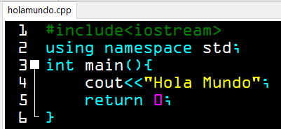

Lenguaje de Programación: C++
Características principales
- Lenguaje compilado (más rápido que los interpretados)
- Soporta programación orientada a objetos, estructurada y genérica
- Permite el manejo de memoria de forma manual (uso de punteros)
- Alta eficiencia y rendimiento
- Amplio control sobre el hardware
- Compatible con código C
- Utilizado en sistemas operativos, videojuegos, drivers, etc.
Tipos de datos
- Enteros: int, short, long, long long
- Decimales: float, double, long double
- Caracteres: char
- Booleanos: bool (true o false)
- Texto: string (de la biblioteca STL)
- Otros: void, enum, estructuras (struct), clases (class)
Ventajas
- Lenguaje rápido y eficiente
- Control total de recursos y memoria
- Orientado a objetos
- Amplia comunidad y documentación
- Muy usado en desarrollo de software de alto rendimiento
Desventajas
- Mayor complejidad en sintaxis que otros lenguajes modernos
- Gestión manual de memoria puede causar errores (como fugas de memoria)
- Menos portable que lenguajes como Java o Python
- No tan amigable para principiantes
Codigo del ejemplo: "hola mundo"
